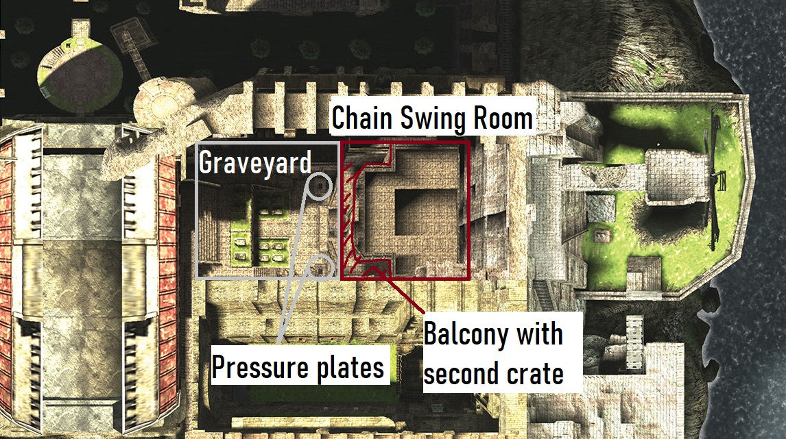
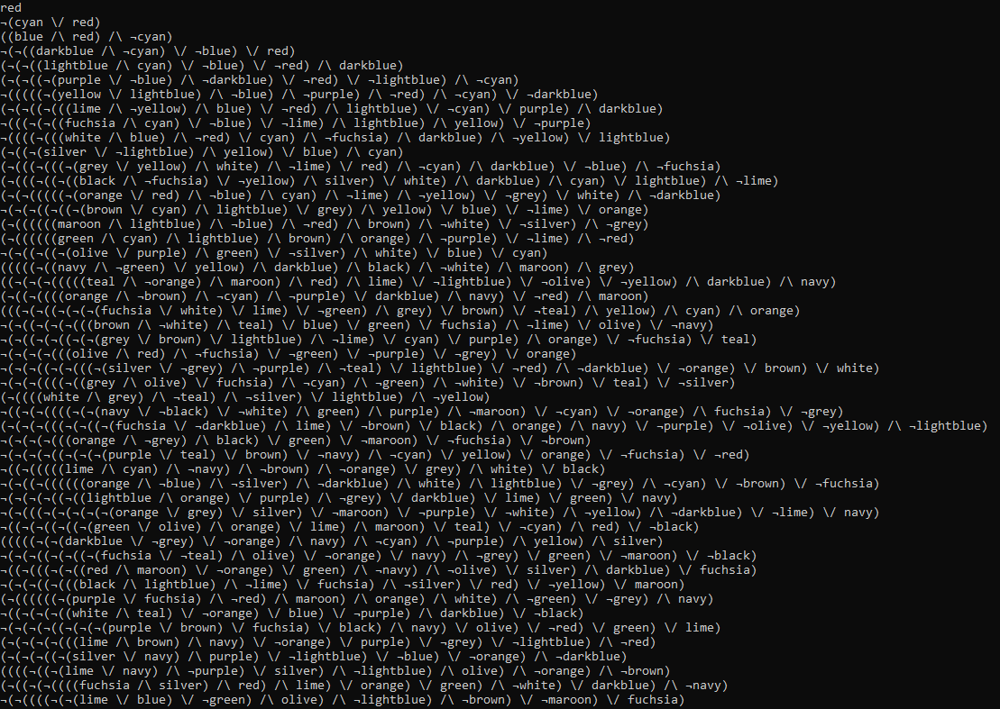
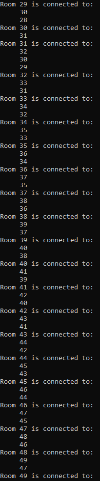
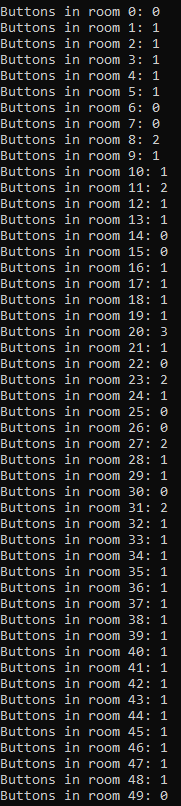
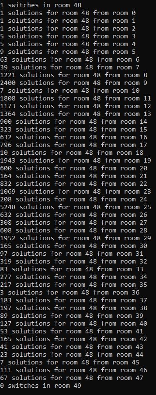
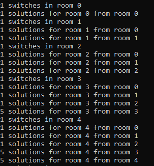

What is it?
- My year 3 dissertation was originally designed as a response to reviews of games I’d been watching at the time complaining about structureless sandboxes, repetitiveness in roguelikes, and Kate Compton’s “10,000 Bowls of Oatmeal” problem. While a proposal for any sort of remedy to lack of structure in open world games would be far too big in scope, the eventual proposal I decided on exploring would be a piece of code designed to generate structure for levels, rather than the actual levels themselves. I also wanted to make this more abstract than describing individual rooms and where they were allowed to be accessed from at specific points, so I focused on making a system which would use Boolean formulae to generate this structure based on game flags.
Why I made it
- One day in September 2019, I was cooking and mistakenly poured fat down the sink. Something I didn’t notice until later on when I poured some cold washing up water away, solidified the fat, and blocked it. That week, I’d been thinking hard about what I wanted my dissertation to be. I knew I wanted to focus on things I’d learned from Ico, and that I wanted it to be something that went against the design philosophy in more typical sandbox games, but I didn’t have any ideas on how to do it. While looking for the right parts of the piping to unscrew so I wouldn’t get water and fat on my face, I began to think about how the player in games does the same thing I was doing, attempting to guide the water (the character) through the levels (the pipe), by unblocking the fat (game flags/in game obstacles). On the one hand, this crystalised my approach to my dissertation, and helped me come up with the system I’d eventually implement, on the other hand, I did lose focus on the actual situation at hand and managed to get dirty washing up water on my face. It’s also worth mentioning that an idea I’d had fairly early on was that I wanted whatever I made to be able to work as middleware, because this was designed to be an abstract system, rather than anything to make a specific game.
How it works
- I designed a SAT-Solver which works as an ALL-SAT solver in the pruning stages (i.e. finds all solutions which evaluate to true
with a Boolean equation). Most of these would only be 2-3 terms long at max, although it could deal with larger equations. After finding
all of the possible solutions for this equation (which represents one room), the full solver would iterate through each room and test
for solutions which were mutually satisfiable for each room. For example, if one room contained a flag required by another room, solutions
would be checked through to make sure that there were enough solutions where the flags are the same between rooms to allow a player to
progress through. To eliminate the problem of tautologies (e.g. True and not True), the equation generator was never allowed to use the
same flag twice in one equation, but was only allowed to select from flags in previous rooms, so technically, progressing through the
level required the solving of simple tautologies. To allow this to happen, I added a system where certain rooms could allow backtracking
to go back to previous rooms if there was no way to reach it by just going back and setting the flags in the correct order. This bypassed
tautologies completely, and allowed for situations wherein technically A /\ ¬A could be true.
It was inspired by a system I’d observed repeated over and over in Ico. Imagining objects as Boolean variables often required Ico to leave a room without Yorda (in my notes she was represented as E, because Ico is always present, and this implied), so one room’s escape clause being ¬E, and the room after being E, meaning solving that section requires that ¬E /\ E, but at different points. An excellent example is the graveyard, where you have to leave her on a pressure plate, which constitutes leaving her behind at a high level, although at a low level, she is standing in place of where a crate should be on a pressure plate (there are two pressure plates the graveyard has one crate for one, the room after has the second), so it’s also arguable that a representation of this might be (¬E /\ C) /\ (E /\ ¬C) in Boolean terms. The addition of time as a variable complicates things, but was solved with my representation of backtracking to previous rooms, allowing someone to effectively put a wedge in the gate of one condition when it opens, so that when the equation evaluates to false, it’s still true functionally. This was a concept that I had a difficult time explaining, and while I understand a lot of it in a sort of internal natural language, much of it remains tricky to explain verbally.

The most inspirational part of Ico for this project. getting out of this section requires E /\ ¬E when simplified Observations
- By focusing on making it reusable as a black box middleware from the start, I was also able to make sure that the objects are fairly sensible, and can be accessed extremely easily. Additionally, because of the level of abstraction, it’s possible to use this in any number of ways. At the time for example, I was doing a module on software verification, which inspired me to attempt to use it as a piece of software to verify that existing games were completable. I already knew they were having played them until the end, but through using the software, I was able to discover a logical skip in Ico (almost impossible to execute because of random events however), and that my program works as expected. Additionally, with my work on Shuttle Engine, I’m planning to make the entire program serialisable, so that a structure may be generated once during development, manually checked if deemed necessary, then reused as a level, rather than re-running the program for random generation.
How successful has it been?
- On many levels, this is my most successful project to date. Firstly, the premise as far as I can work out is entirely original, and
while not finding results isn’t the same as confirmation, the quantity of research I undertook to confirm this seems somewhat conclusive,
and the fact that I was able to confirm that an entirely original concept works well, exactly as I’d envisioned, and extremely quickly with
the right settings, is very pleasing, and remains something I’m extremely proud of. The closest piece of work I could find that was remotely
similar was on a paper called “Quantified Boolean Formulas[sic]: Call the Plumber”, which instead of relying on game flags to change states,
represented player actions as variables in an equation. It’s also far more low level, with the implementation being far more specific to
the game.
As my work with Shuttle Engine has shown, it’s also very easily compatible with existing projects, and works perfectly. The only part that remains to be tested is applying obstacles to the levels as I’d planned, although this is more of a design challenge than anything that was in the scope of the project. I was also able to come up with the kinds of things I would add to behave in specific ways, and as such, I still deem it a success. The other major achievement for this project is just how close the finished product was to my original goals. Almost every single goal I’d had at the start was achieved exactly as I’d envisioned when I wrote it, and I’d expected given the amount of time I had to work on it, and the potential for failure, that at least a few things would have to change, and while I wasn’t able to make a graphical representation I was happy with (almost requiring the creation of an entire game on top), everything else was achieved in full.

Completion equations for each room

Example output of which prior rooms each room is connected to 
Quantity of buttons per room. Higher quantity generally means the puzzle requires more specific backtracking

Number of mutually satisfiable solutions with prior rooms. Has to be at least 1 per room 
Number of mutually satisfiably solutions with prior rooms, but earlier in the level, which is more difficult What would I do differently if I started over?
- This project has effectively been the start of a 2 year long circular logic equation, wherein everything I’ve made after as a personal project which uses this one, has to be done in C# for compatibility, whereas I originally made the project in C# so it could be used with Unity, something I only did very briefly for the graphical representation near the end of the project, which I still wasn’t happy with because of rushed aspects, and the problems of applying a highly abstract algorithm into a very specific implementation. As such, like many of my other projects, I’d have re-written it in C++. It’d be a huge undertaking, but theoretically this should be able to port into C++ with relative ease (and a lot of spare time). Unfortunately, this would require the re-writing of Shuttle Engine, which already dwarfs this project.
How I've been able to use it
- In spite of having less code than Shuttle Engine, it’s easily been one of my largest projects to date, where I’ve had to justify everything I wrote as I was going along with rigorous research, and a lot of checking, both logically for functionality, and to make sure what I was doing wasn’t something I could use research to make easier, so it’s been a major test of time management, keeping a watchful eye over feature creep, and research, which has made subsequent, larger projects like Shuttle Engine far less intimidating. Practically, I’ve already added this into Shuttle Engine, and it’s been working as a good testing ground, although would benefit from some hand designed elements. I’ve also been able to use it to look through other games and find patterns which make the levels more interesting, which in a way, allows me to apply good structure in other games to things I create.